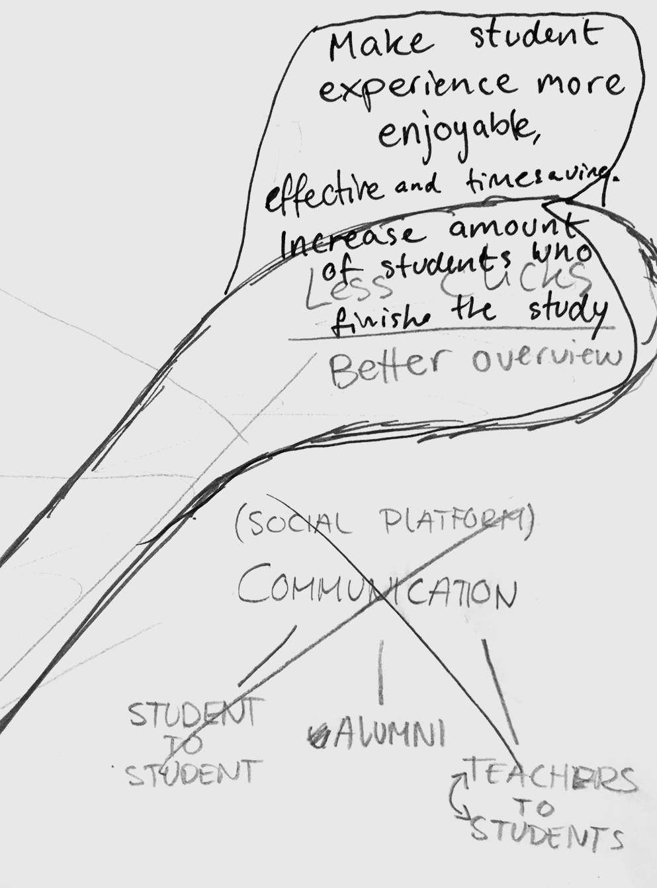

KEA platform
Goal
We were to make a new study platform for KEA that had to be user friendly and make the practical part of study life easier. We did therefore a 5 day design sprint to learn the process of design and come up with a powerful solution.
Process
Design sprint
After filling out team canvas we started our design sprint. First we had to come up with a long term goal that we would build our solution on. It had to be strong enough to convince the stakeholders of its usability and value. Our initial goal was that the app had to make student experience more enjoyable, effective and timesaving. During the process we re-evaluated it and wrote an improved end goal that would appeal more to the stakeholders. It became ´´Increase the amount of students who finish the studies. Less clicks, better overview.``
Each of us drew sketches to build an idea ´bank´ that we could later go through by using post-its and selecting the strongest ones. We then selected the ideas that would go further in the process of supervoting. After the super vote we had a clear concept of the platform that was visualized and taken to the next step of prototyping.

Prototyping / Testing
We made several tryouts of the design that we later stitched together to make a whole and made a mid-fidelity prototype that was ready for peer review.
A few students were asked to test our prototype for us to observe how they used it as well as to identify the strong and weak points of our solution. We found out that most of the test persons wanted to use the platform to view schedule, access files and submissions. These were also the parts we had focused on the most.
Click the image below to view the mid-fidelity prototype.
Result
After the testing it was time to finish the project individually. I made a redesign and added extra content for the mobile prototype, as well as made a version of it for a desktop experience. The main functions stayed the same, but i added a banner field for upcoming events at KEA, created a submissions page and worked on the overall design solution and color scheme.
Click the image below to see high-fidelity mobile prototype
All the relevant and most wanted information was put on the first page to save users time. It was achieved by creating a pop-up interactive calendar with lecture information and an intuitive expandable section for study material. Everything else would be put into a separate menu.
Click the image below to see high-fidelity desktop prototype